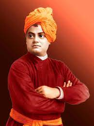

Swami Vivekananda
"He was a greater thicker, a great orator"

Swami vivekananda -slogan "Strength is Life,weakness is Death "
Here's a history of swami vivekananda:
- Date of Birth: January12, 1863
- Place of Birth:Calcutta, Bengal Presidency (Now Kolkata in West Bengal)
- Education: Calcutta Metropolitan School; Presidency College, Calcutta
- Early Life and Education: Born Narendranath Dutta, into an affluent Bengali family in Calcutta, Vivekananda was one of the eight children of Vishwanath Dutta and Bhuvaneshwari Devi. He was born on January 12, 1863, on the occasion of Makar Sankranti. Father Vishwanath was a successful attorney with considerable influence in society. Narendranath’s mother Bhuvaneshwari was a woman endowed with a strong, God-fearing mind who had a great impact on her son.
- Spiritual Crisis and Relationship with Ramkrishna Paramhansa:Although Narendranath’s mother was a devout woman and he had grown up in a religious atmosphere at home, he underwent a deep spiritual crisis at the start of his youth. His well-studied knowledge led him to question the existence of God and for some time he believed in Agnosticism. Yet he could not completely ignore the existence of a Supreme Being. He became associated with Brahmo Movement led by Keshab Chandra Sen, for some time. The Bramho Samaj recognised one God unlike the idol-worshipping, superstition-ridden Hinduism.
- Spiritual Awakening:In 1884, Naredranath underwent a considerable financial distress due to the death of his father as he had to support his mother and younger siblings. He asked Ramakrishna to pray to the Goddess for the financial welfare of his family. On Ramakrishna’s suggestion he himself went to the temple to pray. But once he faced the Goddess he could not ask for money and wealth, instead he asked for ‘Vivek’ (conscience) and ‘Bairagya’ (reclusion). That day marked the complete spiritual awakening of Narendranath and he found himself drawn to an ascetic way of life.
- Life of a Monk:During the middle of 1885, Ramakrishna, who had been suffering from throat cancer, fell seriously ill. In September 1885, Sri Ramakrishna was moved to Shyampukur in Culcutta, and a few months later Narendranath took a rented villa at Cossipore. Here, he formed a group of young people who were ardent followers of Sri Ramakrishna and together they nursed their Guru with devoted care. On 16 August 1886, Sri Ramakrishna gave up his mortal body. After the demise of Sri Ramakrishna, around fifteen of his disciples including Narendranath began to live together in a dilapidated building at Baranagar in North Calcutta, which was named Ramakrishna Math, the monastic order of Ramakrishna. Here, in 1887, they formally renounced all ties to the world and took vows of monkhood. The brotherhood rechristened themselves and Narendranath emerged as Vivekananda meaning "the bliss of discerning wisdom".
-
Lecture at the World Parliament of Religions:During the course of his wanderings, he came to know about the World Parliament of Religions being held in Chicago, America in 1893. He was keen to attend the meeting, to represent India, Hinduism and his Guru Sri Ramakrishna’s philosophies. He found assertion of his wishes while he was meditating on the rocks of Kanyakumari, the southernmost tip of India. Money was raised by his disciples in Madras (now Chennai) and Ajit Singh, Raja of Khetri, and Vivekananda left for Chicago on May 31, 1893 from Bombay. - Teachings and Ramakrishna Mission:Vivekananda returned to India in 1897 amidst warm reception from the common and royal alike. He reached Calcutta after a series of lectures across the country and founded the Ramakrishna Mission on May 1, 1897 at Belur Math near Calcutta. The goals of the Ramakrishna Mission were based on the ideals of Karma Yoga and its primary objective was to serve the poor and distressed population of the country. The Ramakrishna Mission undertook various forms of social service like establishing and running school, collages and hospitals, propagation of practical tenets of Vedanta through conference, seminars and workshops, initiating relief and rehabilitation work across the country.
- Death:Swami Vivekananda had predicted that he will not live till the age of forty. On July 4, 1902, he went about his days’ work at the Belur Math, teaching Sanskrit grammar to the pupils. He retired to his room in the evening and died during meditation at around 9. He is said to have attained ‘Mahasamadhi’ and the great saint was cremated on the Banks of river Ganga.
- Legacy: Swami Vivekananda revealed to the world the true foundations of India's unity as a nation. He taught how a nation with such a vast diversity can be bound together by a feeling of humanity and brother-hood. Vivekananda emphasized the points of drawbacks of western culture and the contribution of India to overcome those. Netaji Subhash Chandra Bose once said: "Swamiji harmonized the East and the West, religion and science, past and present. And that is why he is great. Our countrymen have gained unprecedented self-respect, self-reliance and self-assertion from his teachings." Vivekananda was successful in constructing a virtual bridge between the culture of East and the West.
" Iam lucky to share the information about Swami Vivekananda was a great spiritual man and philosopher around the world. He wanted global spirituality, harmony, universal brotherhood, and peace across the world. His teaching and philosophy still exists in the present day and guides the modern era youth". —Swami Vivekananda